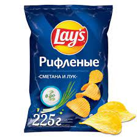

Чипсеки
Места для тусичей
Санта
Форма
Чипсеки — закуска, представляющая собой тонкие ломтики картофеля реже — других корнеплодов или различных плодов, как правило, обжаренных в масле (фритюре). Также к чипсам иногда подают дип — густой соус, в который окунают чипсы.

Вкусные Чипсеки